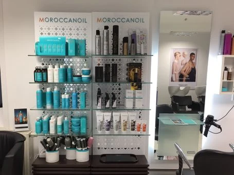
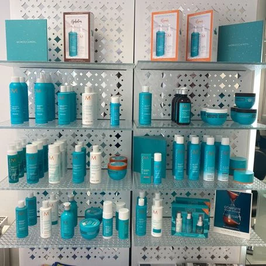
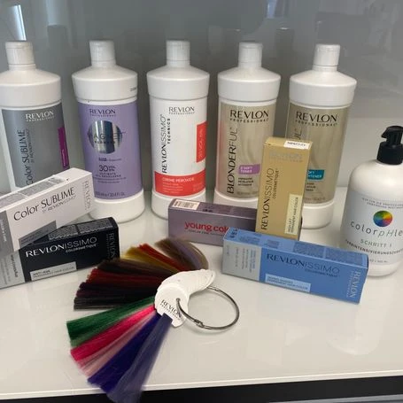
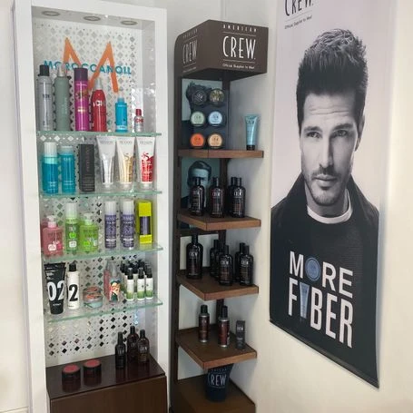

Der Salon
Zwei Bedienplätze, ein Waschbecken, ein türkises Regal, das man vom Gehsteig aus sieht. Kein großer Laden — aber einer, in dem eine Meisterin selbst am Stuhl steht.
Perlacher Straße 2 · München-Giesing

Bahar
Ich heiße Fakhria Tokhi, im Laden nennen mich alle Bahar. Seit zwanzig Jahren arbeite ich in München, der Salon in der Perlacher Straße gehört mir. Kein Filialleiter, keine Kette, keine wechselnden Aushilfen: Wer hier einen Termin bekommt, weiß auch, wer ihn macht.
Vor jeder Farbe sehe ich mir die Kopfhaut an, vor jedem Schnitt reden wir darüber, was zu Ihrer Haarstruktur und zu Ihrem Alltag passt — nicht darüber, was gerade auf Instagram läuft.
Der Name ist ein Wortspiel: aus Bahar und Haar wird BaHaar’s.
Den Meisterbrief habe ich von der Handwerkskammer für München und Oberbayern. Augenbrauen mache ich in Fadentechnik — ohne Wachs, ohne Pinzette, und das gibt es nicht in jedem Salon in Giesing.
Womit gearbeitet wird
Was im Regal steht und tatsächlich benutzt wird:
- Moroccanoil prägt das ganze Regal, und die Farbe dieser Seite
- Olaplex Aufbau nach Blondierung, 30 €
- Revlon Professional
- American Crew für die Herren
- CHI
Ammoniakfreie, allergiefreie Farbe gibt es für alle, die empfindlich reagieren — sie kostet 6 bis 10 € Aufpreis.

So sieht es aus
Ein heller, weiß gefliester Laden mit zwei Bedienplätzen, zwei Waschbecken und dem Regal, das man vom Gehsteig aus sieht. Die Aufnahmen sind mit dem Telefon gemacht und nicht nachbearbeitet.






BaHaar’s Kosmetikstudio
Direkt nebenan ist das Kosmetikstudio dazugekommen: Gesichtsbehandlung, Waxing, Maniküre, Pediküre, Make-up und Wimpern.
noch offen
Für das Kosmetikstudio stehen die Preise noch nicht fest. Ich schreibe hier lieber nichts hin, als eine Zahl zu nennen, die an der Kasse nicht gilt. Rufen Sie an, dann sage ich Ihnen, was eine Behandlung kostet.
Perlacher Straße 2
- Öffnungszeiten
-
- Montag 10:00 – 16:00
- Dienstag bis Freitag 09:00 – 19:00
- Samstag 09:00 – 16:00
- Sonntag geschlossen
- Anschrift
-
BaHaar’s Styling Studio
Perlacher Straße 2
81539 München-Giesing